Escudo Dragón (Gorod Krovi)
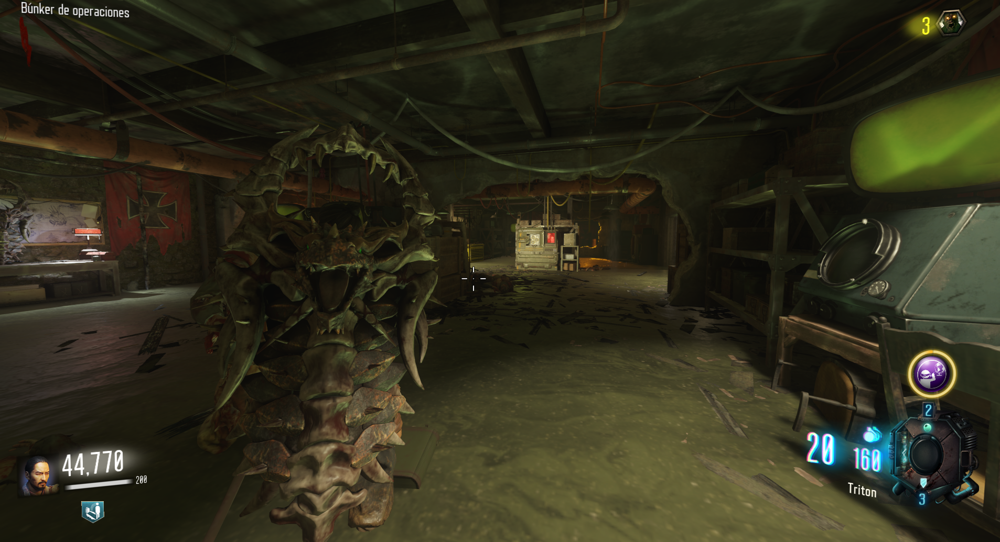
Primera parte: En el camino desde el Jugger-Nog hasta el búnker.
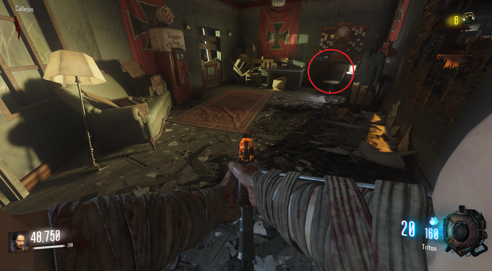
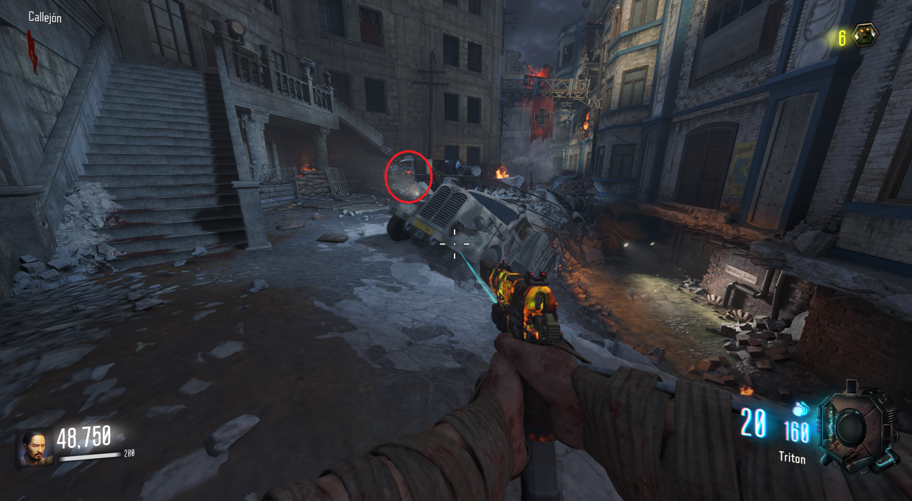
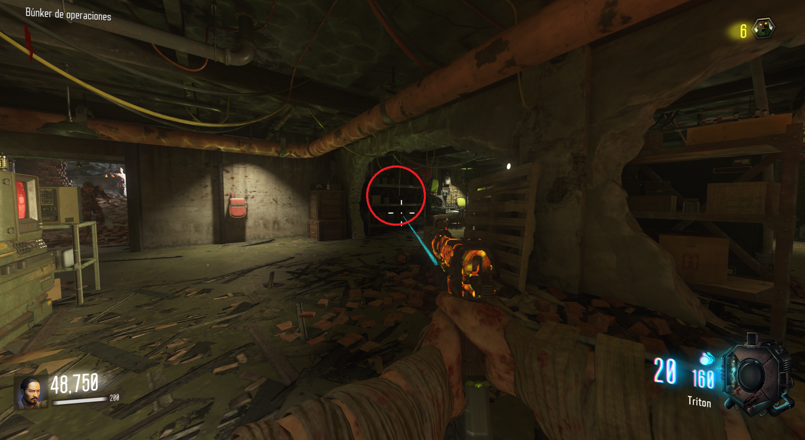
Segunda parte: En el camino desde el búnker hasta Infarmary.
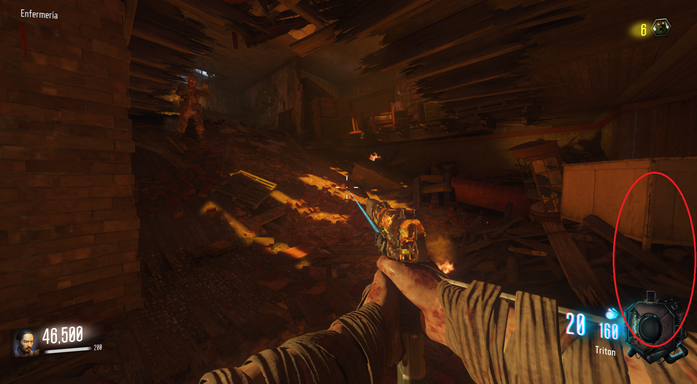
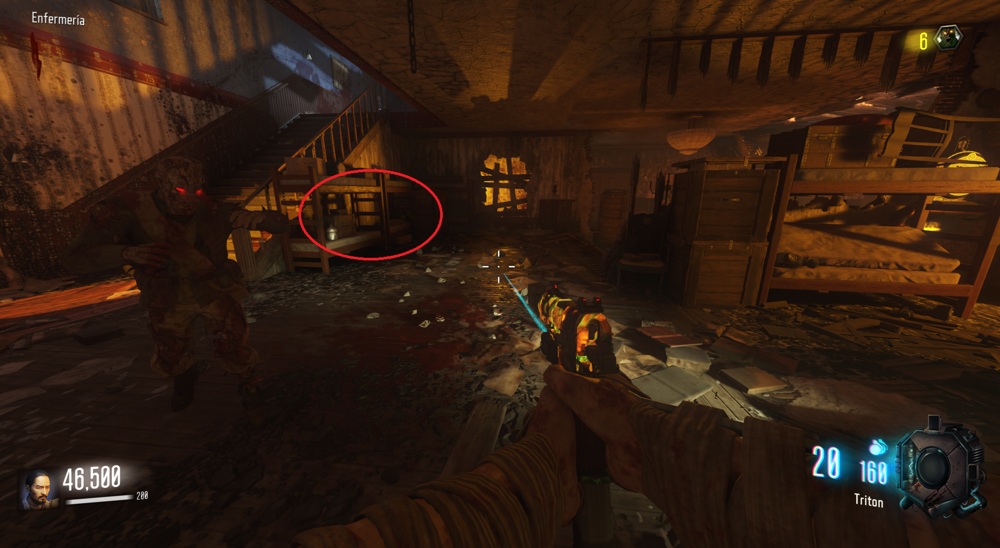
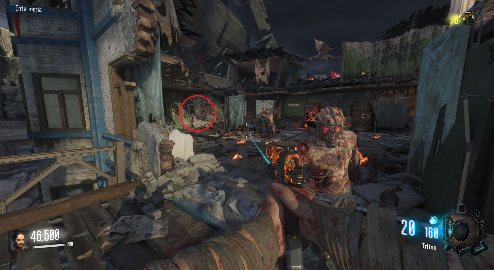
Tercera parte: En el camino desde la parte alta de Armory hasta su parte baja, que es el camino a Supply Depot.
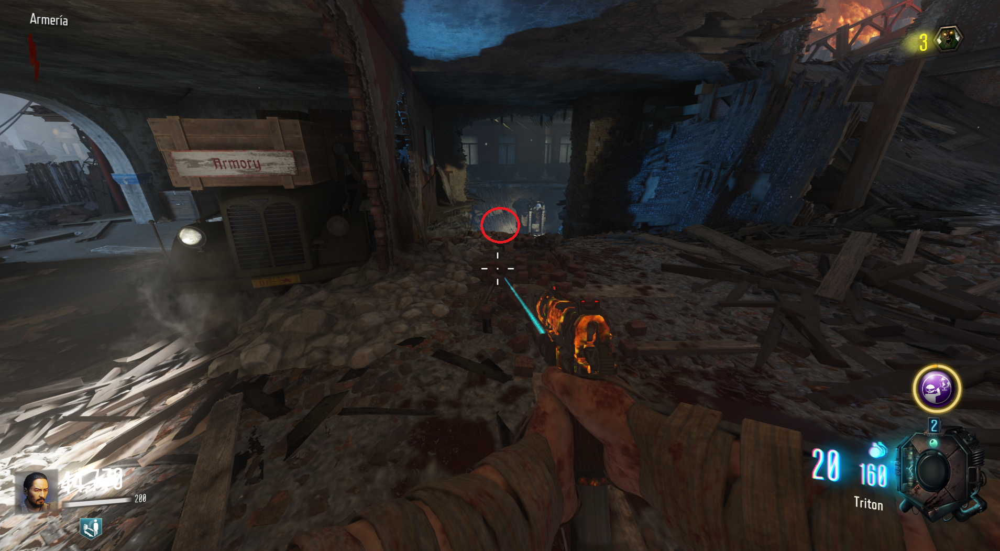
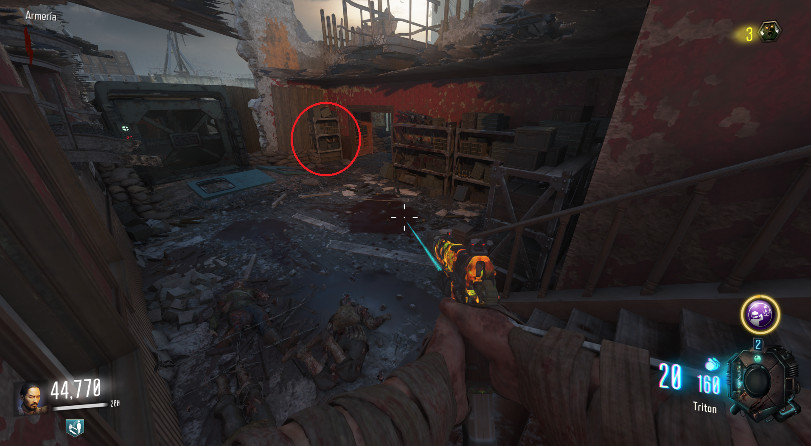
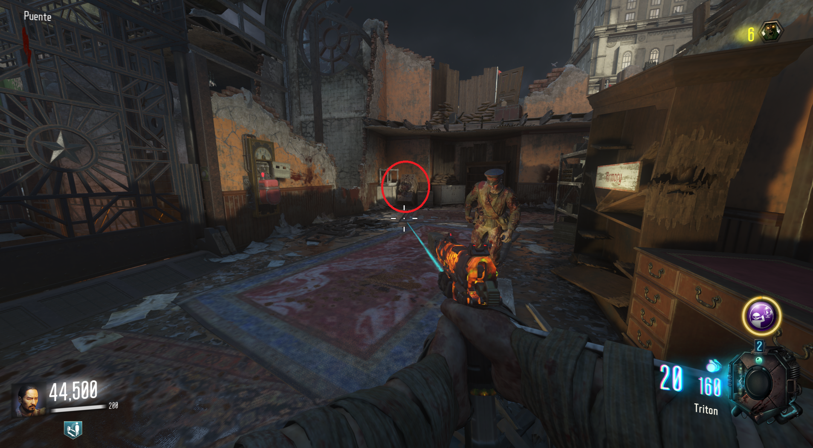
Fabricar: Dentro del búnker encontraremos una mesa de construcción.
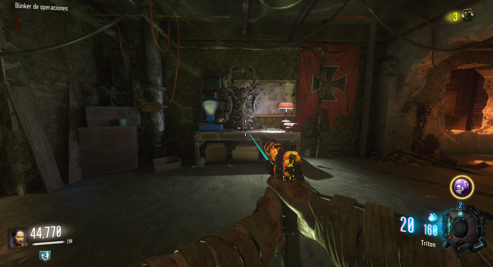